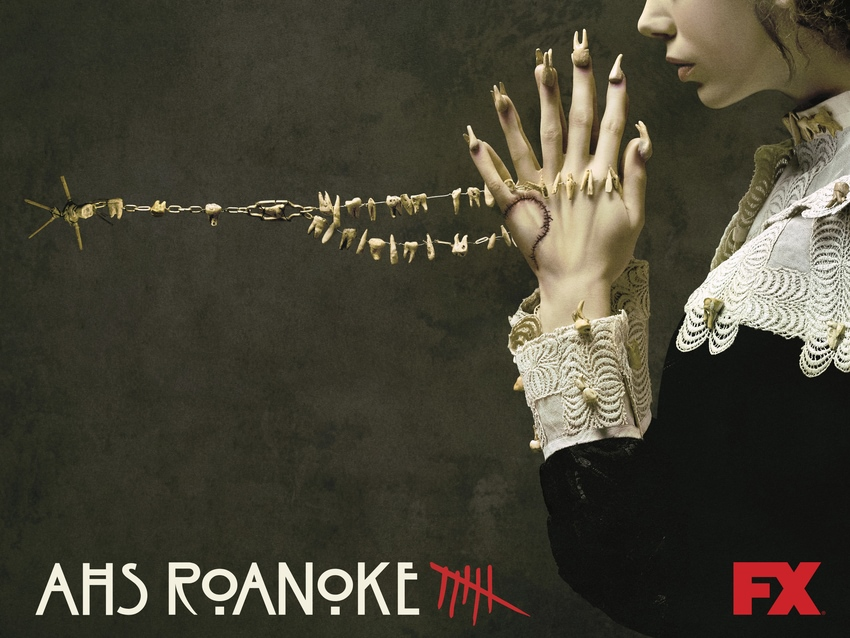

ROANOKE

TRAMA
La primera parte de la temporada se presenta en el documental "My Roanoke Nightmare", centrada en la experiencia vivida por la pareja Shelby Miller (Lily Rabe) y Matt Miller (Andre Holland) (recreados por Sarah Paulson y Cuba Gooding Jr. respectivamente) quienes llegan a vivir a una casa colonial en Carolina del Norte. Desde el momento en que la pareja se instala en su nuevo hogar, una serie de eventos paranormales comienzan a suceder a su alrededor. La segunda parte, ambientada un año después, y con el éxito que causó "My Roanoke Nightmare"; el ejecutivo que produjo el show, Sidney Aaron James (Cheyenne Jackson), planea una segunda temporada llamada "Return to Roanoke: Three Days in Hell", donde los actores de las recreaciones y sus contra-partes del mundo real se reúnen bajo el techo de la casa en Roanoke durante los tres días de la luna de sangre; sin pensar en los peligros que allí los esperarían.
EPISODIOS
- Capítulo 1
- Capítulo 2
- Capítulo 3
- Capítulo 4
- Capítulo 5
- Capítulo 6
- Capítulo 7
- Capítulo 8
- Capítulo 9
- Capítulo 10
REPARTO
- Sarah Paulson como Shelby Miller / Audrey Tindall / Lana Winters
- Cuba Gooding Jr. como Matt Miller / Dominic Banks
- Lily Rabe como Shelby Miller
- André Holland como Matt Miller
- Angela Bassett como Lee Harris / Monet Tumusiime
- Kathy Bates como Thomasin White
- Lady Gaga como Scathach
- Denis O'Hare como Dr. Elias Cunningham / William Van Henderson
- Wes Bentley como Ambrose White / Dylan
- Evan Peters como Edward Phillipe Mott / Rory Monaham
- Frances Conroy como Mama Polk
- Leslie Jordan como Cricket Marlowe
- Adina Porter como Lee Harris
- Saniyya Sidney como Flora Harris